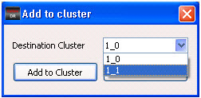

There are a number
of cluster-specific operations that can be performed on defects
in the Defect List.
Procedure
- In the Defect List tab,
right-click in the row header to invoke the cluster-specific operations
menu.
- In the popup menu, select
one of the operations listed in Table 1.
Table 1. Defect List General OperationsMenu Item
|
Description
|
|---|
Add to Cluster
|
Adds an isolated defect
to an existing cluster.
|
Remove from Cluster
|
Removes a defect from
a cluster. The defect becomes an isolated defect.
|
Certain operations are expanded
as follows:
To add a cluster:
Click Add to Cluster.
A pop up appears with a list of the existing cluster names.
Figure 1. Add to Cluster Dialog
Box (Defect List)
Choose
the destination cluster from the dropdown list.
Click Add to Cluster.